Throughout my time at DePaul University I created games and demos to showcase my
understanding within a particular area of study or to have fun. Below are a few examples
of projects that showcase my programming expertise.
While my specialty lies in gameplay programming, I'm familiar with a multitude
of languages including but not limited to C#, C, Java, Python, along with a general understanding of
Scala, Lua, and Scheme. Below are a few examples of my previous projects. Source code is available
upon request and if available.
tl;dr:
Intro
Hi there! My name is Ian and on the internet I go by Tech. I'm currently pursuing my BS degree in Computer Science
with a concentration in Game Systems as well as a minor in Game Design over at DePaul University. I'm a game programmer
though I've dabbled in software design, game design, and system design and am interested in pursuing all these avenues!
Where I'm from
I'm originally from a small town in Northern California where I grew up until heading to Chicago for college. I can't
say whether or not I prefer a big city to a town where everyone knows your name, but I've been content everywhere so
far!
Interests / Hobbies
Outside of coding I enjoy creating music on my digital synthesizer (TE OP-1), creating "corruptions" a form of glitch art
similar to cartridge tilting on an old NES cartridge, and streaming said corruptions or other games on Twitch in my free time.
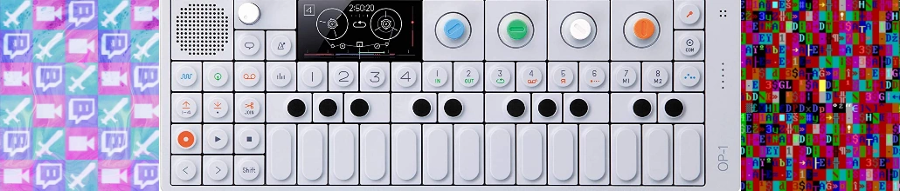
Favorite games
A ton of these games I grew up playing for countless hours! Nearly every one of these titles I've also heavily enjoyed
their subsequent sequels/prequels (with the only exception being Blinx and Runescape 3).
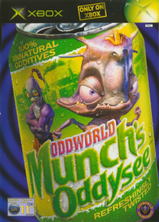
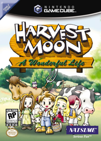
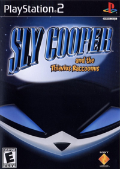
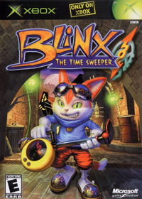
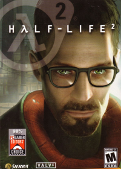
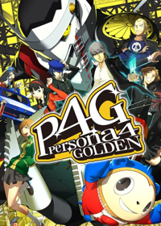
Favorite TV Shows
I'm a big fan of SciFi and Drama! I'm a bit of a Trekkie (with DS9 and TNG being my favorites, though TOS is a gem).
There's a handful of other shows I've watched just once through and loved, though these five keep me coming back for
rewatch after rewatch:
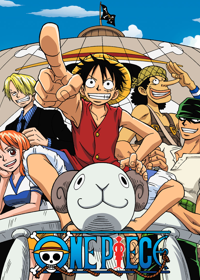
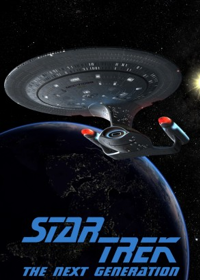
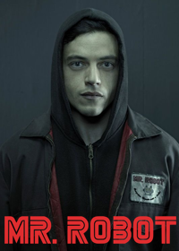
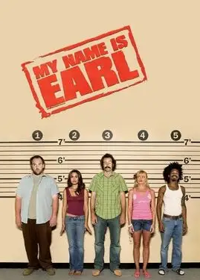
DirectX11 Graphics Framework
During college I created a framework to experiement with graphics and rendering using the DirextX11
graphics API.
Tools:
, Perforce
Learning outcomes for this experiment:
Illumination techniques
Shaders utilizing Gourand and Phong shading
Antialiasing
Multisampling
Texture mapping models
Environmental mapping
If you're interested in the source code for this project or viewing several videos I made showcasing this framework, please
contact me.
Memory system
As C++ is written on top of C, we can utilize the facilities offered by C to improve the performance of our programs. One
instance of where I took advantage of this relationship is with the creation of a custom memory system, which wraps the
functions malloc and free.
We can create our own personal heap of memory to utilize as storage by allocating a block of memory using malloc. From there
we overload the new and delete operators in C++ with our own version of new and delete that the memory system
provides. These new operations perform raw memory read/writes with bare minimum validation checking to improve performance
without leaking memory.
Unique improvements
One way I increased the performance of the overloaded new operator was to keep track of the last location that a block was freed
via a delete call. In the best case scenario, this will avoid the need to traverse the entire heap to locate a contiguous block
of memory given that the size of the free block is less than the requested size.
A common problem that custom memory systems must face is fragmentation, which is the result of non-contigious blocks of memory
allocated in the heap with variable gaps between each one. To resolve this, we can perform coalescence upon deletion to merge
non-contigious blocks into whole chunks once more.
Results
To test these results, I utilized a number of new/delete commands with a set dataset both on the built-in new/delete commands as well
as the custom memory system's version. Overall, the custom memory system had similar performance runtimes for the delete operation,
however for the new call I saw an improvement of around 5% in standard conditions and 15% in the best case scenario.
Particle System
Tools: , , Perforce
Towards the end of my Sophomore year I was given a particle system with some blatant performance issues. Given three weeks,
I was tasked with optimizing the system to the best of my ability to outperform my peers. To achieve this, I needed
to utilize performance tricks and cleanup legacy code. I employed the following strategies:
Rearranged the particle's data structure to make it cache friendly and allow for faster iteration by the engine.
Utilized RVO (Return value optimization) on existing physics calculations to speed up their call time.
Removed STL containers in favor of homemade data structures with less bloat.
Changed function signatures to pass by reference rather than by copy/pointer when necessary to avoid large data transfers.
Moved OpenGL calls out of update loop to only be called upon draw when needed.
Initialized data prior to simulation to prevent initial jittering.
Utilized SIMD to enhance vector and matrix operations.
The initial simulation prior to optimization ran in a total of 75.33 ms. After my optimization, I was able to bring this
runtime down to a total 15.40 ms or a performance ratio increase of 4.89.
Developer Console
Tools: , , Perforce
While developing the Sly engine I found an increasing desire
to create visualization and debugging tools that would aid in development of my prototype game. I had created a handful of existing visualization
tools that I could use as place markers and diagnostic statements, however I wanted something more robust than the ability to place a debugging
sphere in world space.
In my initial research I read up on history of command console usage from their birth in the early computing days to later runtime
implementations. My personal favorite and the console I took heavy inspiration from was the GoldSrc engine's console. Not only was the
console capable of controlling gameplay related elements, it also allowed for engine level calls that could control higher level features
while the game was in play.
The console system can be broken down into two major components which involve the Keyboard to Screen (including input, parsing,
rendering of text) and theCommand structure (including a command broker, build-in commands, and a user command structure). For more
information on this process, feel free to check out my initial research doc.
Results
After completing the developer console (see console documentation
here), I was quite satisfied with the results. The console allowed me to quickly prototype features for my game prototype including positional data,
engine queries, rapid level transitions, godcam toggle, etc. I had successfully achieved what I had sought out to do, create a console that would aid me while
also creating a useful feature for any other developer that may choose to use my engine.
I have created a developer console in my follow up "Pumpkin Engine" and plan to continue to include this useful tool!
Sending commands in Sly
Detect
Fall 2021, Role: Solo Tools: Unreal Engine,, ,
Blueprinting, Perforce, Vosk
Description
Detect is a gameplay demo showcasing the usage of voice control to help a detective solve a crime. The project
is utilizing the Vosk language model to read
vocal input from the player's mic.
The original concept for Detect came from an older Konami
game I streamed called Lifeline or Operator's Side in Japan. The game had a unique gimmick in that
it must be controlled using almost exclusively a microphone. For a game released in 2003, the accuracy of
the voice recognition within this game was astounding to me! It requires a little patience to play,
those with a midwestern accent have found a bit more luck in getting accurate results. Nevertheless, I
was fascinated with this type of gameplay input and wanted to try my hand at replicating it with modern
voice recognition.
From the initial conceptualization I decided on a language model to use with my options being Vosk, Google's Speech Kit,
and Window's Speech API. Vosk had the advantage of being free to use, fairly lightweight, and provided the opportunity to
retrain its various language models to better suite a particular project's vocabulary. From here I was deciding on a handful
of settings before choosing a Detective Scenario.
Setting the Scene
Since I was limited to a total of 10 weeks and art is not my strong suite, I utilized two Unreal Marketplace assets for
the restaurant crime scene and the model of the detective (partially modified). I regularly studied Lifeline to compare
and contrast the ways in which the main character accepts various voice commands navigate the scene. I settled on a system
in which a number of key locations are stored as points of interest. These points of interest keep track of several subobjects
that the character can interact within. An example of this is when the detective spots a stain on the ground. The player
can ask for further inspection, where a bit of information about the case is revealed.
Quality of Life
Without a bit of guidance, it can be difficult to find exactly what sticks out in a scene. Like Lifeline, I wanted
to give the player a bit of a helping hand if they're at a loss for what else they can interact with. Using
a custom stencil depth, the player is able to enter "detective vision" (similar to Persona's third eye) to
see objects of interest. Once an object has been examined to exhaustion, it is removed from detective vision.
An in-game map of the various points of interest were added as a way to orient the player. With this in place,
players are able to navigate to each location, examine objects, and draw conclusions about the case. At the time
of writing this, the demo does not have an "end condition" as time did not permit too much narrative, however
I do plan on continuing development as a hobby project.
Gameplay Showcase
As this was a university project, I submitted footage to showcase my work at the completion of the term. This
video may serve as a gameplay demo with some creative decisions stated over voice while playing the game.
Build
A copy of the build showcased above is available here.
The only prerequisite that you may need to get the game up and running is ensuring your default microphone is set
appropriately. I've setup a setting that allows you to swap your microphone in game, however Unreal may need to unload
before the swap can be made. Feel free to email me if you have any trouble running the build!
Shadow that Pervades
Spring 2021, Company: DOGS Studio Tools: Unreal Engine, Blueprinting, Perforce, Trello
Task
My first few months with DOGS studio I was tasked with creating a designer
friendly quest system that would allow designers to quickly prototype various
activities.
Prior to my time at the studio, the lead programmer was creating quests manually
using Logic Driver. Though,
creating quests using this alone was impractical for our designers who for the majority
only had limited Blueprint knowledge.
Quest Task System
After planning out a system with the lead programmer, we decided on a system where
the designers create Quests and Tasks. A quest is defined as being a
container for any number of tasks. A quest may be to go to a location and collect an
object or it may be to bury a bone. Quests may belong to a larger quest line
that designers could use to sequence these quests easily. Quest lines are defined
as a container of quests (which are a container of tasks). These components
made up the quest system.
Task
Tasks are simple objects that are created when their respective quest becomes
active. They are primarily what designers would create to initiate activity within
the game. Tasks may contain simple or complex logic, trigger events based on
condition, or may serve as an entrypoint for other gameplay features. All a
designer must do is call "Task complete" to finish the task and progress the quest.
A number of example tasks were created to showcase their usage.
Outcomes
Designing a tool for designers, artists, even other programmers can help you see
problems from their perspective. The details of implementation may not matter as
much if the final result produces effective results to resolve any problem the other
discipline may face. In this particular instance, the designers went from having a
difficult quest system that would require a week to get trained on to an intuitive
system that they were happy to use.
Video Samples
Four quests firing off their various tasks
The tutorial initially provided to designers, this is an earlier iteration of the system
The studio was looking to create a multiplayer combat game in which players would fight using preselected
characters. The characters would fight for control of the map while battling one another with spells and
attacks. The goal set for me in the beginning was to implement Unreal's
Gameplay Ability System.
The goal was to have the majority of character movement, spells, attacks, and attributes stored within GAS.
Challenges
Unreal's documentation on GAS is rather lacking. Their documentation provides a brief overview of the system, provides a
singleplayer example, and wishes you luck on your journey. Thus, learning how to use GAS is a challenge in itself. Thankfully,
a few excellent members of the community have provided alternative methods of learning the GAS system, even with multiplayer in
mind. GAS is multiplayer ready from the start, however with all multiplayer applications, mindfulness is key.
One problem our team faced with GAS as it stands out of the box is that it is skewed towards single entity control. A single
pawn or AI will have a GAS component attached to them and that will be the end of it. For our purpose, we are aiming to have
several pawns you can control, each with a variety of abilities to pull from. Also, these pawns will not be possessed as they
will have AI controllers managing their movement. This required a bit of coaxing and overriding GAS's internal functionality,
though in the end it was well worth the effort.
Results
After a few weeks of implementing the Gameplay Ability System within Killectibles, we had a characters whose movement, abilities,
and attributes were entirely driven by the Gameplay Ability System. We setup an action point cost for now, which is replenished
on each turn. A turn manager allows only one player to move and attack at a time. Once a turn is passed, the new player's abilities
are activated and they're ready to fight!
While the Gameplay Ability System had a steep learning curve, I found learning it invaluable to my knowledge of Unreal and
broader game development. GAS is C++ first, blueprint second which allows programmers to enact explicit control for designers
to implement abilities. Once setup, the systems are simple enough for someone who has never used GAS before to understand
it. I plan on utilizing this system in future projects.
Video Showcase
Showcase of movement, abilities, and attributes within Killectibles
Proving Grounds
Spring 2021, Role: Lead Programmer, Team Size: 6 Tools: Unreal Engine, , ,
Blueprinting, Perforce, Trello
Proving grounds is a third-person round-based survival game based in Ancient Egypt. Your goal is to fight your way through
hoards of enemies to prove your worth to the Gods!
Responsibilities
Design and implement player features for combat, locomotion, interaction, and more.
Standardize art, design, and programming data to be persistent and serializable.
Implement animation logic and dispatch time-based events.
Create audio subsystems for persistent audio and sound localization.
Maintained final product through performing builds, squashing engine bugs, and profiling.
Description
As a capstone project, Proving Grounds was created in a total of 20 weeks from conceptualization to
a completed build. This was a university exercise to not only measure student's capability within their
respective discipline, but also to see their effectiveness at working within a group context.
Our team was composed of two designers, two artists, and two programmers including myself. Production
went well for the first few months during conceptualization. We noted early on that we were lacking
in animation, modeling, and sound design. We were able to pool our skills together to fill any gaps in talent
to complete our build. Despite my role being primarily programming, I often assisted with locating animations
and importing sound to speed production along.
Once development was completed, we submitted our build for showcasing. We had the honor
of receiving feedback from Kate Olguin from Other Ocean Interactive and Brice Puls,
and independent game designer working on titles such as Tony Hawk's Pro Skater series,
Bugsnax, and Killer Queen Black.
Blue Moon
Spring 2020, Role: Solo Tools: , Unity, Perforce.
Description
Blue Moon is a farming game where you must use your crops to repaint the world.
Conception
Blue Moon was created as a passion project from my love of Harvest Moon.
I've always found great joy and relaxation from simple 2D farming games. I
wanted to try my hand at creating a few of the mechanics I was familiar with
in these titles.
Farming Setup
At the time of creating Blue Moon I was fairly new to Unity, thus I was looking
for a series of tutorials that would get me through a basic project setup that
I would be able to expand upon. One such tutorial I used frequently is a
Udemy course.
This course takes heavy inspiration from Stardew Valley, and I created art in a similar fashion.
Premise
Once the initial farm loop was setup, I wanted to create a loop where you would stay at your
farm, make progress every day in some form, and go to bed. I did not want the progress to
be an arbitrary monetary value as a "highscore" in a relaxing game felt contradictory. While
creating more sections for the tilemap, I had the idea to create a black and white variant.
I had already created a system for detecting which tile on the screen the player was currently
hovering over. Deleting this tile on a top level overlay would reveal lower tilemaps like
puncturing a small hole in a piece of paper.
Learning Outcomes
How to create event dispatchers in Unity
Using a time manager for dispatching events
Separating animation out to individual limbs
Preserving scene data between transitions
Creating object pools in Unity
Gameplay Showcase
You can see the gameplay loop showcased in this video:
Build
Blue Moon was built with WebGL. It can be played over at Itch.io
During my junior year at DePaul I created a clone of Centipede. This served as a transition
from basic programming to advanced system development. This project was the cornerstone of my
later engine development and higher level classes.
The game was created in a 10 week period with weekly sprints to plan and develop future content. While this was
university led, the planning and implementation was entirely up me. Creating Centipede allowed me to learn
and implement design patterns that may be useful within a game context. A few of the design patterns I utilized
include:
Observer - Data collection
Strategy - Blaster controls for AI and player
Factory - Mushrooms, bullets, and sprites
Singleton - Factories and managers
Command - Score and Sound manager
Finite State Machine and State Pattern - Centipede movement
Results
If you want an extremely exhaustive video describing every subsystem you can watch my
university submission with
a bucket of popcorn, however for those with less time on their hands I have the following
outcomes:
Object oriented basics:
An understanding of encapsulation
Practice using polymorphism
Aggregation/inheritance development
Large scale project practice:
Break down a large project into feasible components
Time management for tackling feasible components
Version control to maintain a large codebase
Library integration and system components
Documentation tools
Tools of the trade familiarization:
Managing multiple classes and components within Visual Studio
The ability to start a project from scratch
Development techniques from using the call stack, tracing, watch, and conditional breaking.
Digital playground
Role: Programmer - Team Size: 2 Tools:
This game was created to showcase a comprehension and rhetoric subject known
as a "discourse community." Discourse communities are groups of people who
communicate with one another with a basis of understanding and assumption.
Given my partner and I were both beginning our Freshman year of college, we figured
it would be fitting to create a game about entering the gaming industry as an
intern to exhibit usage of jargon and common understanding. This was the first game
project either have worked on as a group.
Here's a quick playthrough of the game, there are a total of 7 endings depending
on how you respond to dialogue.
Results
Overall the learning outcomes from working on this project were that working
in a team environment can help accomplish much more in a smaller time frame as well
as provide specialty skills that one individual may lack.
Our professor was very pleased with the results and submitted our project to
the universities "First Year Writing Showcase," where we won an award and got to
showcase the project to the university community. It was quite the fun experience!
We made a poster board in the form of a game case to go with the game:
Ember
Role: Designer and Programmer - Team Size: 1 Tools:
Ember was a text adventure that expressed the concepts surrounding sustainability
and environmental awareness through a descriptive "what if" game world. The world
has several locations:
Learning outcomes
This was my first academic project game project, thus I had practice presenting
my game to non-coders. It was also my first time designing a game, thus I had a
chance to create several documents to explain the lore and setting of the game.
In terms of programming, this project became rather large for a beginner python
project. I referred frequently to Zork for examples on verbage to classify commands as,
though these were created as large switch structures rather than a proper command system.
We Compile - 2020
Role: Programmer - Team Size: 6 Tools: , Unity, Perforce.
We Compile is a Unity game and one of my first larger group projects. Our
team was composed of two programmers, two designers, and two artists. This
was my first opportunity to work with another programmer as I did not have
a chance to perform pair programming in the past nor did I have any project
experience without being the soul programmer.
Despite this being my first experience working with another programmer, we
worked together quite well! The project was finished in 10 weeks and source
code is available upon request.
Here is a playthrough of the first level:
Learning outcomes
This was not my first experience working in Unity as an engine, however our
artists were more familiar with working in 2D, thus the team opted for using
Unity 2D. Although, since Unity 2D is merely a flat scene with an orthographic camera
facing the main plane, working in this variant is similar to the 3D experience.
On occasion our team did face difficulty distinguishing 2D and 3D elements as objects
are still textured and treated as 3D elements despite the 2D view, but overall once
we were used to the workflow the production became much easier.
Game Development
Throughout my time at DePaul University I created games and demos to showcase my understanding within a particular area of study or to have fun. Below are a few examples of projects that showcase my programming expertise.
Programming
While my specialty lies in gameplay programming, I'm familiar with a multitude of languages including but not limited to C#, C, Java, Python, along with a general understanding of Scala, Lua, and Scheme. Below are a few examples of my previous projects. Source code is available upon request and if available.
tl;dr:
Intro
Hi there! My name is Ian and on the internet I go by Tech. I'm currently pursuing my BS degree in Computer Science with a concentration in Game Systems as well as a minor in Game Design over at DePaul University. I'm a game programmer though I've dabbled in software design, game design, and system design and am interested in pursuing all these avenues!
Where I'm from
I'm originally from a small town in Northern California where I grew up until heading to Chicago for college. I can't say whether or not I prefer a big city to a town where everyone knows your name, but I've been content everywhere so far!
Interests / Hobbies
Outside of coding I enjoy creating music on my digital synthesizer (TE OP-1), creating "corruptions" a form of glitch art similar to cartridge tilting on an old NES cartridge, and streaming said corruptions or other games on Twitch in my free time. 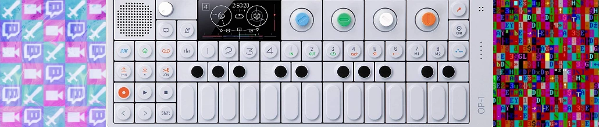
Favorite games
A ton of these games I grew up playing for countless hours! Nearly every one of these titles I've also heavily enjoyed their subsequent sequels/prequels (with the only exception being Blinx and Runescape 3).
Favorite TV Shows
I'm a big fan of SciFi and Drama! I'm a bit of a Trekkie (with DS9 and TNG being my favorites, though TOS is a gem). There's a handful of other shows I've watched just once through and loved, though these five keep me coming back for rewatch after rewatch:
DirectX11 Graphics Framework
During college I created a framework to experiement with graphics and rendering using the DirextX11 graphics API.
Tools: , Perforce
Learning outcomes for this experiment:- Illumination techniques
- Shaders utilizing Gourand and Phong shading
- Antialiasing
- Multisampling
- Texture mapping models
- Environmental mapping
If you're interested in the source code for this project or viewing several videos I made showcasing this framework, please contact me.
Memory system
As C++ is written on top of C, we can utilize the facilities offered by C to improve the performance of our programs. One instance of where I took advantage of this relationship is with the creation of a custom memory system, which wraps the functions malloc and free.
We can create our own personal heap of memory to utilize as storage by allocating a block of memory using malloc. From there we overload the new and delete operators in C++ with our own version of new and delete that the memory system provides. These new operations perform raw memory read/writes with bare minimum validation checking to improve performance without leaking memory.
Unique improvements
One way I increased the performance of the overloaded new operator was to keep track of the last location that a block was freed via a delete call. In the best case scenario, this will avoid the need to traverse the entire heap to locate a contiguous block of memory given that the size of the free block is less than the requested size. A common problem that custom memory systems must face is fragmentation, which is the result of non-contigious blocks of memory allocated in the heap with variable gaps between each one. To resolve this, we can perform coalescence upon deletion to merge non-contigious blocks into whole chunks once more.
Results
To test these results, I utilized a number of new/delete commands with a set dataset both on the built-in new/delete commands as well as the custom memory system's version. Overall, the custom memory system had similar performance runtimes for the delete operation, however for the new call I saw an improvement of around 5% in standard conditions and 15% in the best case scenario.Particle System
Tools: , , Perforce
Towards the end of my Sophomore year I was given a particle system with some blatant performance issues. Given three weeks, I was tasked with optimizing the system to the best of my ability to outperform my peers. To achieve this, I needed to utilize performance tricks and cleanup legacy code. I employed the following strategies:
Results
The initial simulation prior to optimization ran in a total of 75.33 ms. After my optimization, I was able to bring this runtime down to a total 15.40 ms or a performance ratio increase of 4.89.
Developer Console
Tools: , , PerforceWhile developing the Sly engine I found an increasing desire to create visualization and debugging tools that would aid in development of my prototype game. I had created a handful of existing visualization tools that I could use as place markers and diagnostic statements, however I wanted something more robust than the ability to place a debugging sphere in world space.
In my initial research I read up on history of command console usage from their birth in the early computing days to later runtime implementations. My personal favorite and the console I took heavy inspiration from was the GoldSrc engine's console. Not only was the console capable of controlling gameplay related elements, it also allowed for engine level calls that could control higher level features while the game was in play.
The console system can be broken down into two major components which involve the Keyboard to Screen (including input, parsing, rendering of text) and theCommand structure (including a command broker, build-in commands, and a user command structure). For more information on this process, feel free to check out my initial research doc.
Results
After completing the developer console (see console documentation here), I was quite satisfied with the results. The console allowed me to quickly prototype features for my game prototype including positional data, engine queries, rapid level transitions, godcam toggle, etc. I had successfully achieved what I had sought out to do, create a console that would aid me while also creating a useful feature for any other developer that may choose to use my engine.
I have created a developer console in my follow up "Pumpkin Engine" and plan to continue to include this useful tool!
Sending commands in Sly
Detect
Fall 2021, Role: Solo
Tools: Unreal Engine,, , Blueprinting, Perforce, Vosk
Description
Detect is a gameplay demo showcasing the usage of voice control to help a detective solve a crime. The project is utilizing the Vosk language model to read vocal input from the player's mic.
The original concept for Detect came from an older Konami game I streamed called Lifeline or Operator's Side in Japan. The game had a unique gimmick in that it must be controlled using almost exclusively a microphone. For a game released in 2003, the accuracy of the voice recognition within this game was astounding to me! It requires a little patience to play, those with a midwestern accent have found a bit more luck in getting accurate results. Nevertheless, I was fascinated with this type of gameplay input and wanted to try my hand at replicating it with modern voice recognition.
From the initial conceptualization I decided on a language model to use with my options being Vosk, Google's Speech Kit, and Window's Speech API. Vosk had the advantage of being free to use, fairly lightweight, and provided the opportunity to retrain its various language models to better suite a particular project's vocabulary. From here I was deciding on a handful of settings before choosing a Detective Scenario.
Setting the Scene
Since I was limited to a total of 10 weeks and art is not my strong suite, I utilized two Unreal Marketplace assets for the restaurant crime scene and the model of the detective (partially modified). I regularly studied Lifeline to compare and contrast the ways in which the main character accepts various voice commands navigate the scene. I settled on a system in which a number of key locations are stored as points of interest. These points of interest keep track of several subobjects that the character can interact within. An example of this is when the detective spots a stain on the ground. The player can ask for further inspection, where a bit of information about the case is revealed.
Quality of Life
An in-game map of the various points of interest were added as a way to orient the player. With this in place, players are able to navigate to each location, examine objects, and draw conclusions about the case. At the time of writing this, the demo does not have an "end condition" as time did not permit too much narrative, however I do plan on continuing development as a hobby project.
Gameplay Showcase
As this was a university project, I submitted footage to showcase my work at the completion of the term. This video may serve as a gameplay demo with some creative decisions stated over voice while playing the game.
Build
A copy of the build showcased above is available here. The only prerequisite that you may need to get the game up and running is ensuring your default microphone is set appropriately. I've setup a setting that allows you to swap your microphone in game, however Unreal may need to unload before the swap can be made. Feel free to email me if you have any trouble running the build!
Shadow that Pervades
Spring 2021, Company: DOGS Studio
Tools: Unreal Engine, Blueprinting, Perforce, Trello
Task
My first few months with DOGS studio I was tasked with creating a designer friendly quest system that would allow designers to quickly prototype various activities.
Prior to my time at the studio, the lead programmer was creating quests manually using Logic Driver. Though, creating quests using this alone was impractical for our designers who for the majority only had limited Blueprint knowledge.
Quest Task System
After planning out a system with the lead programmer, we decided on a system where the designers create Quests and Tasks. A quest is defined as being a container for any number of tasks. A quest may be to go to a location and collect an object or it may be to bury a bone. Quests may belong to a larger quest line that designers could use to sequence these quests easily. Quest lines are defined as a container of quests (which are a container of tasks). These components made up the quest system.
Task
Tasks are simple objects that are created when their respective quest becomes active. They are primarily what designers would create to initiate activity within the game. Tasks may contain simple or complex logic, trigger events based on condition, or may serve as an entrypoint for other gameplay features. All a designer must do is call "Task complete" to finish the task and progress the quest. A number of example tasks were created to showcase their usage.
Outcomes
Designing a tool for designers, artists, even other programmers can help you see problems from their perspective. The details of implementation may not matter as much if the final result produces effective results to resolve any problem the other discipline may face. In this particular instance, the designers went from having a difficult quest system that would require a week to get trained on to an intuitive system that they were happy to use.
Video Samples
Killectibles
Winter 2022, Company: DOGS Studio
Tools: Unreal Engine, , , Rider, Blueprinting, Perforce, Taiga
Task
The studio was looking to create a multiplayer combat game in which players would fight using preselected characters. The characters would fight for control of the map while battling one another with spells and attacks. The goal set for me in the beginning was to implement Unreal's Gameplay Ability System. The goal was to have the majority of character movement, spells, attacks, and attributes stored within GAS.
Challenges
Unreal's documentation on GAS is rather lacking. Their documentation provides a brief overview of the system, provides a singleplayer example, and wishes you luck on your journey. Thus, learning how to use GAS is a challenge in itself. Thankfully, a few excellent members of the community have provided alternative methods of learning the GAS system, even with multiplayer in mind. GAS is multiplayer ready from the start, however with all multiplayer applications, mindfulness is key.
One problem our team faced with GAS as it stands out of the box is that it is skewed towards single entity control. A single pawn or AI will have a GAS component attached to them and that will be the end of it. For our purpose, we are aiming to have several pawns you can control, each with a variety of abilities to pull from. Also, these pawns will not be possessed as they will have AI controllers managing their movement. This required a bit of coaxing and overriding GAS's internal functionality, though in the end it was well worth the effort.
Results
After a few weeks of implementing the Gameplay Ability System within Killectibles, we had a characters whose movement, abilities, and attributes were entirely driven by the Gameplay Ability System. We setup an action point cost for now, which is replenished on each turn. A turn manager allows only one player to move and attack at a time. Once a turn is passed, the new player's abilities are activated and they're ready to fight!
While the Gameplay Ability System had a steep learning curve, I found learning it invaluable to my knowledge of Unreal and broader game development. GAS is C++ first, blueprint second which allows programmers to enact explicit control for designers to implement abilities. Once setup, the systems are simple enough for someone who has never used GAS before to understand it. I plan on utilizing this system in future projects.
Video Showcase
Proving Grounds
Spring 2021, Role: Lead Programmer, Team Size: 6
Tools: Unreal Engine, , , Blueprinting, Perforce, Trello
Proving grounds is a third-person round-based survival game based in Ancient Egypt. Your goal is to fight your way through hoards of enemies to prove your worth to the Gods!
Responsibilities
Description
As a capstone project, Proving Grounds was created in a total of 20 weeks from conceptualization to a completed build. This was a university exercise to not only measure student's capability within their respective discipline, but also to see their effectiveness at working within a group context.
Our team was composed of two designers, two artists, and two programmers including myself. Production went well for the first few months during conceptualization. We noted early on that we were lacking in animation, modeling, and sound design. We were able to pool our skills together to fill any gaps in talent to complete our build. Despite my role being primarily programming, I often assisted with locating animations and importing sound to speed production along.
Once development was completed, we submitted our build for showcasing. We had the honor of receiving feedback from Kate Olguin from Other Ocean Interactive and Brice Puls, and independent game designer working on titles such as Tony Hawk's Pro Skater series, Bugsnax, and Killer Queen Black.
Blue Moon
Spring 2020, Role: Solo
Tools: , Unity, Perforce.
Description
Blue Moon is a farming game where you must use your crops to repaint the world.
Conception
Blue Moon was created as a passion project from my love of Harvest Moon. I've always found great joy and relaxation from simple 2D farming games. I wanted to try my hand at creating a few of the mechanics I was familiar with in these titles.
Farming Setup
At the time of creating Blue Moon I was fairly new to Unity, thus I was looking for a series of tutorials that would get me through a basic project setup that I would be able to expand upon. One such tutorial I used frequently is a Udemy course. This course takes heavy inspiration from Stardew Valley, and I created art in a similar fashion.
Premise
Once the initial farm loop was setup, I wanted to create a loop where you would stay at your farm, make progress every day in some form, and go to bed. I did not want the progress to be an arbitrary monetary value as a "highscore" in a relaxing game felt contradictory. While creating more sections for the tilemap, I had the idea to create a black and white variant.
I had already created a system for detecting which tile on the screen the player was currently hovering over. Deleting this tile on a top level overlay would reveal lower tilemaps like puncturing a small hole in a piece of paper.
Learning Outcomes
Gameplay Showcase
You can see the gameplay loop showcased in this video:
Build
Blue Moon was built with WebGL. It can be played over at Itch.io
Centipede - 2019
Tools: , , SFML 2.5, TEAL (Time, Event, and Asset Layer), Perforce
During my junior year at DePaul I created a clone of Centipede. This served as a transition from basic programming to advanced system development. This project was the cornerstone of my later engine development and higher level classes.
The game was created in a 10 week period with weekly sprints to plan and develop future content. While this was university led, the planning and implementation was entirely up me. Creating Centipede allowed me to learn and implement design patterns that may be useful within a game context. A few of the design patterns I utilized include:
Results
If you want an extremely exhaustive video describing every subsystem you can watch my university submission with a bucket of popcorn, however for those with less time on their hands I have the following outcomes:
Object oriented basics:- An understanding of encapsulation
- Practice using polymorphism
- Aggregation/inheritance development
Large scale project practice:- Break down a large project into feasible components
- Time management for tackling feasible components
- Version control to maintain a large codebase
- Library integration and system components
- Documentation tools
Tools of the trade familiarization:Digital playground
Role: Programmer - Team Size: 2
Tools:
This game was created to showcase a comprehension and rhetoric subject known as a "discourse community." Discourse communities are groups of people who communicate with one another with a basis of understanding and assumption.
Given my partner and I were both beginning our Freshman year of college, we figured it would be fitting to create a game about entering the gaming industry as an intern to exhibit usage of jargon and common understanding. This was the first game project either have worked on as a group.
Here's a quick playthrough of the game, there are a total of 7 endings depending on how you respond to dialogue.
Results
Overall the learning outcomes from working on this project were that working in a team environment can help accomplish much more in a smaller time frame as well as provide specialty skills that one individual may lack. Our professor was very pleased with the results and submitted our project to the universities "First Year Writing Showcase," where we won an award and got to showcase the project to the university community. It was quite the fun experience! We made a poster board in the form of a game case to go with the game:
Ember
Role: Designer and Programmer - Team Size: 1
Tools:
Ember was a text adventure that expressed the concepts surrounding sustainability and environmental awareness through a descriptive "what if" game world. The world has several locations:
Learning outcomes
This was my first academic project game project, thus I had practice presenting my game to non-coders. It was also my first time designing a game, thus I had a chance to create several documents to explain the lore and setting of the game. In terms of programming, this project became rather large for a beginner python project. I referred frequently to Zork for examples on verbage to classify commands as, though these were created as large switch structures rather than a proper command system.
We Compile - 2020
Role: Programmer - Team Size: 6
Tools: , Unity, Perforce.
We Compile is a Unity game and one of my first larger group projects. Our team was composed of two programmers, two designers, and two artists. This was my first opportunity to work with another programmer as I did not have a chance to perform pair programming in the past nor did I have any project experience without being the soul programmer. Despite this being my first experience working with another programmer, we worked together quite well! The project was finished in 10 weeks and source code is available upon request.
Here is a playthrough of the first level:
Learning outcomes
This was not my first experience working in Unity as an engine, however our artists were more familiar with working in 2D, thus the team opted for using Unity 2D. Although, since Unity 2D is merely a flat scene with an orthographic camera facing the main plane, working in this variant is similar to the 3D experience. On occasion our team did face difficulty distinguishing 2D and 3D elements as objects are still textured and treated as 3D elements despite the 2D view, but overall once we were used to the workflow the production became much easier.